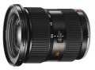

器材库 > 120中幅镜头 > VARIO-ELMAR-S 30-90/3.5-5.6 ASPH.

详细规格
镜头类型
广角变焦镜头
发布日期
2012-09-17
厂家推荐价格
7,380.00 （英镑）
焦距
30mm-90mm
等效35mm画幅焦距
24mm-72mm
最大光圈
f/3.5-f/5.6
最小光圈
f/32
视角（对角）
30mm：81.5 90mm：34
视角（水平）
30mm：73.1 90mm：28.5
视角（垂直）
30mm：51 90mm：19.5
镜头结构
14片/11组
非球面镜片
3片
最近对焦距离
65cm
最大放大倍率
30mm：0.058 90mm：0.154
滤镜口径
90mm
镜头卡口
Leica S
防抖
否
颜色
黑色
尺寸
101x114mm
重量
1275g
andrelee2015-03-01 16:324.83 分
操作性 5.00耐用性 5.00性价比 4.00解像力 5.00色彩还原 5.00机械结构 5.00
安然踏步2014-03-05 18:324.08 分
操作性 5.00耐用性 3.00性价比 3.00解像力 4.50色彩还原 4.50机械结构 4.50
冰8335652013-09-10 21:454.58 分
操作性 5.00耐用性 5.00性价比 2.50解像力 5.00色彩还原 5.00机械结构 5.00